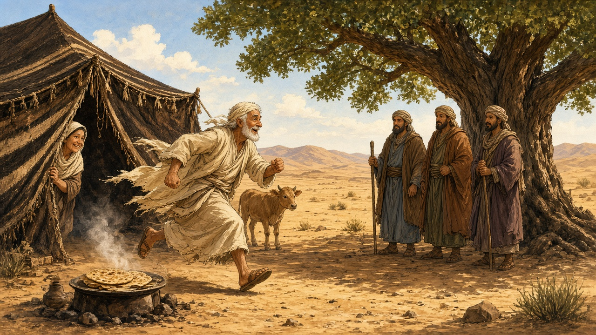
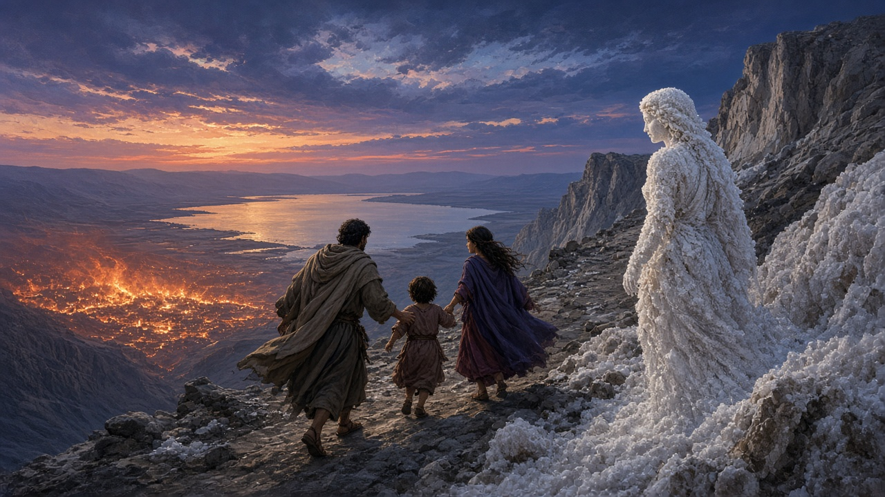
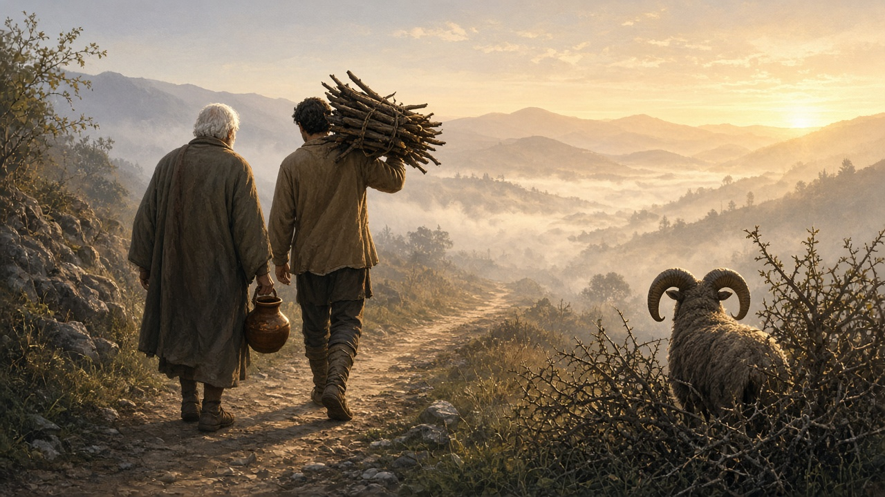

📜 Parashat Vayera (וירא): The Laughing Parsha
Shabbat 31 October 2026 · 20 Cheshvan 5787 · Genesis 18:1–22:24
Cold open: same two words, new mountain
Last week: the God who says lech lecha (לֶךְ לְךָ), "go." This week, the same two words come back — וְלֶךְ־לְךָ֔ (22:2) — and this time the destination is a mountain where Avraham may lose everything. Bookends.
Meanwhile, in between, a ninety-year-old woman is laughing at angels.
Welcome to Vayera (וַיֵּרָא), "And He appeared." The hinge of the whole portion is one Hebrew root: צ־ח־ק, laugh. Sarah laughs. Isaac's name means "he'll laugh." Sarah says everyone will laugh with her. And then the parsha ends with the least funny scene in the Torah. From laughter to trembling — and back to "they walked together."
1. The world's most enthusiastic host
Avraham is sitting at the entrance of his tent in the heat of the day. According to the rabbis (Rashi on 18:1, citing Bava Metzia 86b), it's day three after his circumcision from last week's cliffhanger. God has come to visit the sick. Nice.
Then Avraham looks up — and three men are standing there.
What does a ninety-nine-year-old recovering from surgery do? He runs (18:2). Out of the tent. Toward strangers. In midday heat. "Please, if I've found favour with you, don't pass by." He offers "a little bread." Then he races into the tent: "Sarah, hurry, three measures of fine flour, make cakes!" He runs to the herd, picks a tender calf, and serves curds, milk and meat. "A little bread" has become a three-course feast.
💡 Did you know? The Talmud (Shabbat 127a) says hospitality to guests is greater than receiving the Divine Presence. Avraham literally puts God on hold to greet strangers. That's the Jewish take on customer service.
The Torah just says "three men." Midrash (via Rashi) upgrades them to three angels with one job each: announce Isaac, overturn Sodom, heal Avraham — because "one angel doesn't do two missions." (Ramban later quibbles about Raphael's double booking. Medieval rabbis debating angel HR. We love it.)

2. Sarah laughs
The visitors ask: "Where is Sarah your wife?" "In the tent." One of them says: "I will surely return to you at this season next year, and Sarah your wife will have a son."
Sarah is listening behind the tent flap. She's eighty-nine-ish. She laughs inside herself (18:12): "After I'm worn out, shall I have pleasure — and my lord is old!"
God reports this to Avraham… and quietly edits the quote. Instead of "my lord is old," God says she said "I am old" (18:13). The Talmud (Bava Metzia 87a; also Yevamot 65b) calls this a white lie for shalom bayit, peace at home: even God tweaks the truth so a husband doesn't hear that his wife thinks he's past it.
Then the famous line: "Is anything too wondrous for God?" (18:14). הֲיִפָּלֵא מֵה׳ דָּבָר.
Sarah denies laughing. God says, gently: "No, you laughed." Curtain.
3. Avraham the haggler
The men set off toward Sodom. God wonders out loud: should I hide from Avraham what I'm about to do? Then God shares the plan. Sodom and Gomorrah's outcry is huge; their sin is very heavy.
Avraham steps forward. This is not last week's silent packer. This is the man who argues with Heaven.
"Will You sweep away the righteous with the wicked? Suppose there are fifty righteous in the city… Shall the Judge of all the earth not do justice?" (18:25) — הֲשֹׁפֵט כָּל־הָאָרֶץ לֹא יַעֲשֶׂה מִשְׁפָּט.
And then the haggling: 50… 45… 40… 30… 20… 10. God agrees every time. Avraham stops at ten. (Why ten? Later tradition hears a minyan. The text just stops.)
💡 Did you know? Jewish culture's licence to argue with God starts here. Moses will do it. Job will do it. Hasidic stories about Levi Yitzchak of Berditchev put him in the heavenly courtroom yelling for his people. Vayera is the charter.
4. Sodom and the look back
Two angels reach Sodom at evening. Lot is sitting at the gate — and he learned something from Uncle Avraham. He insists the strangers stay at his house. The city, meanwhile, is… not great. (The next bit is very R-rated; we're skipping it for the Shabbat table. Suffice to say: Sodom fails the hospitality test that Avraham just aced.)
At dawn the angels drag Lot, his wife and two daughters out. "Flee for your life. Don't look behind you." Fire and brimstone fall on Sodom and Gomorrah. Lot's wife looks back — and becomes a pillar of salt (19:26).
The Torah doesn't say why she looked. Midrash (Bereshit Rabbah 50:4, in Rashi) says: by salt she sinned, by salt she was punished — she'd refused to give guests salt. The plain text is quieter, and somehow sadder: she just looked back.
💡 Did you know? There's a real ~20-metre salt pillar on Mount Sedom by the Dead Sea that locals call "Lot's Wife." Geologist Amos Frumkin (GSA Bulletin, 2009) showed it's the remnant of a collapsed salt cave. Josephus claimed he'd seen "the" pillar. Immigrant families know the temptation: don't look back. Sometimes you do anyway.

(The rest of Lot's story in the cave is also R-rated. We're leaving it there.)
5. Déjà vu and the laughing baby
Avraham moves to the Negev. Then — already? — he tells King Avimelech of Gerar that Sarah is his sister. Again. Avimelech takes her; God warns him in a dream: she's a married woman. Avimelech gives Avraham sheep, cattle and silver, and a mild telling-off. (We'll argue about the rerun in the commentary.)
Then the promise lands. Avraham is one hundred (21:5). Sarah has a son. They name him Yitzchak (יִצְחָק) — "he will laugh."
Sarah says: "God has made laughter for me; everyone who hears will laugh with me" (21:6). Rashi: many other barren women conceived that same day; the whole world rejoiced. The joke has become a party.
6. Hagar and Yishmael, take two
At the weaning feast, Sarah sees Yishmael "playing" — metzachek, from that same laugh-root — and tells Avraham: send away this maidservant and her son. Avraham is distressed. God says: listen to Sarah; Yishmael will also become a nation. I'll make your other son a nation too.
He sends them off with bread and a skin of water. In the desert the water runs out. Hagar puts the boy under a bush and sits a bowshot away: "Let me not look on the death of the child." She weeps.
God hears the voice of the boy (21:17) — the name Yishmael, "God hears," coming true again. An angel: "Don't be afraid." God opens her eyes; she sees a well. They live. The boy grows up in the wilderness and becomes an archer.
It's a tough family moment. The Torah doesn't tidy it up. Two sons. Two near-losses. This one, and the next.
7. Be'er Sheva
Avimelech and his army chief show up to make a treaty: swear you won't deal falsely with me or my descendants. They argue over a well; Avraham sets aside seven ewes as witness that he dug it. The place is called Be'er Sheva (בְּאֵר שֶׁבַע) — well of the oath, or well of the seven. Both work.
Then Avraham plants an eshel (אֶשֶׁל) in Be'er Sheva and calls there on the name of God, Eternal God (21:33). The Talmud (Sotah 10a) debates: orchard or inn? Rashi on that page reads eshel as an acronym — achila, shtiya, levaya: food, drink, and escorting guests on their way. Hospitality HQ. The man who ran to strangers at the start of the parsha is still planting welcome at the end.
8. The Akedah — walking together
"After these things, God tested Avraham."
"Take your son, your only one, whom you love — Isaac — and go (lech lecha) to the land of Moriah, and offer him there as a burnt offering on one of the mountains I will tell you" (22:2).
Rashi hears a dialogue: "Your son." "I have two sons." "Your only one." "Each is the only one of his mother." "Whom you love." "I love both." "Isaac."
They walk three days. Isaac carries the wood. Avraham carries the fire and the knife. Isaac asks the question that hangs over the whole scene: "Here is the fire and the wood, but where is the lamb for the offering?"
Avraham: "God will see to the lamb for the offering, my son" (22:8). Rashi: and if not — my son. And they walked, the two of them, together — וַיֵּלְכוּ שְׁנֵיהֶם יַחְדָּו — with the same heart.
On the mountain Avraham builds the altar and binds Isaac. (The rabbis imagined Isaac as a grown man — Bereshit Rabbah 56:8 says 37, with a variant of 26; the Torah gives no age. Say: old enough to understand, old enough to walk.)
An angel calls from heaven: "Do not lay your hand on the boy." Avraham looks up. A ram, caught by its horns in a thicket. He offers the ram instead. He names the place Adonai yir'eh — "God will see."
💡 Did you know? That ram's horn is the backstory of the shofar. Both Rosh Hashanah Torah readings come from this parsha: Genesis 21 on day one, Genesis 22 on day two. Every year, when the shofar sounds, this mountain is in the room.

The portion closes with a genealogy. Buried in the list: a baby girl named Rivka. Next-next week's bride. Life, somehow, keeps going.
Close
So: a ninety-nine-year-old sprinting to feed strangers. A ninety-year-old laughing at angels. A man bargaining God down to ten. A woman who looked back. A baby named Laughter. A well in the desert. And two people walking up a mountain together, until an angel says stop.
Vayera gave Jewish culture three habits: open the tent, argue for justice even with God, and laugh at the impossible. Wilfred Owen, in a WWI poem, rewrote the ending so the old man didn't stop — "and half the seed of Europe, one by one." The Torah's point is the opposite: the knife is stopped. The test ends with a ram, a name, and a walk home.
Same lech lecha. New question: what would you give up — and when do you argue?
This week at a glance
- Torah reading: Vayera, Genesis 18:1–22:24
- Haftarah: II Kings 4:1–37 (Sephardim: 4:1–23) — Elisha and the Shunammite woman: "At this season next year, you will be embracing a son"
- Hebrew date: 20 Cheshvan 5787
- Candle lighting in Melbourne: Friday 30 October, 7:34pm
- Shabbat ends (Havdalah) in Melbourne: Saturday 31 October, 8:35pm
- Coming up: Sigd, Monday 9 November · Rosh Chodesh Kislev, 10–11 November · first Chanukah candle, Friday 4 December
A question for the Shabbat table
Avraham argued with God for strangers in Sodom, but said nothing when asked to give up his own son. When should you argue, and when should you just go?
אברהם התווכח עם אלוהים על זרים בסדום, אבל לא אמר כלום כשביקשו ממנו לוותר על הבן שלו. מתי צריך להתווכח, ומתי פשוט ללכת?
(Grandparents: who's the best host you ever stayed with — and when did you have to not look back?) Optional game: everyone brings one piece of good news to the table. Call it the Good News Times.
Shabbat shalom! 🕯️🕯️